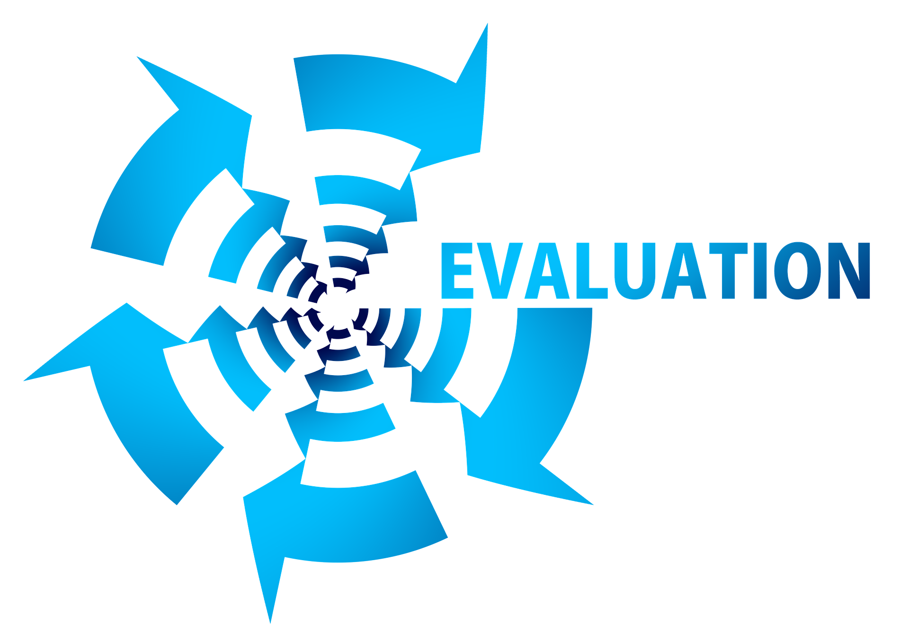

Actividades y Criterios de Evaluación
En este apartado podrás ver las diferentes actividades a realizar, ya indicadas en la organización temporal , pero además podrás ver los criterios de evaluación asociados a dichas actividades, agrupamiento , temporalización y herramientas sugeridas para su puesta en práctica.
Ver criterios de evaluación asociados y otros datos importantes

Volver a la página anterior : Línea Temporal del proyecto Ir a la página siguiente: Instrumentos de Evaluación